lorenz_partial_25d_additive_mse_uniform_p30_obsnoise005_nd30_seed5Project: Lorenz_INDpartial_NDsweep_D1_NormTrue__JacobianODE
Launched: 2026-04-20T03:40:38Z
Completed: 2026-04-20T15:30:12Z
Outcome: complete_clean
Git: latent-JacobianODE @ e1921d4
Expected runs: 1
lorenz_partial_25d_additive_mse_uniform_p30_obsnoise005_nd30_seed5Description
n_delays=30, LC=0, obs_noise=0.05, prediction_steps=30, p30 uniform reconstruction. Same config as the broken qxpj8xpn run from the obsnoise005 ndelays sweep, but with model.encoder.permutation_seed=5 instead of the default 42. Single-run experiment.
Hypothesis
The val/trajectory_loss freeze at n_delays=30 came from the permutation-seed-42 encoder leaving decoded[0] independent of z_dyn at init, which let the optimizer settle into a basin where decoded[0] is reconstructed from z_null only. Validation rollout holds z_null fixed, so the trajectory loss decouples from training. With permutation_seed=5, decoded[0] = z_dyn[0] at init, providing a direct gradient path from z_dyn to the only feature validation measures. If this is sufficient, training/val should agree and the rollout val loss should track training; if it isn't, we need a structural fix (matched val mode, hybrid loss, or a regularizer).
Success criteria
Chosen run (by best_traj_loss): m45rx05h — traj_loss=0.00736, MASE=0.8207, R²=0.9804, LC loss=0.871, epoch=100.0
Runs analyzed: 1 (expected 1)
| run_idx | run_id | best_traj_loss | best_MASE | R² | LC loss | epoch |
|---|---|---|---|---|---|---|
| 0 | m45rx05h |
0.00736 | 0.8207 | 0.9804 | 0.871 | 100.0 |
| Criterion | Verdict | Note |
|---|---|---|
| trajectory val_loss is non-constant across epochs (the freeze pathology disappears) | Unknown | |
| trajectory val_loss reaches at least the level of the n_delays=25 / n_delays=35 runs in the same sweep | Unknown | |
| no training divergence | Unknown |
Automated verdicts use simple numeric-threshold parsing and may mis-classify qualitative criteria. The Discussion section below takes precedence.
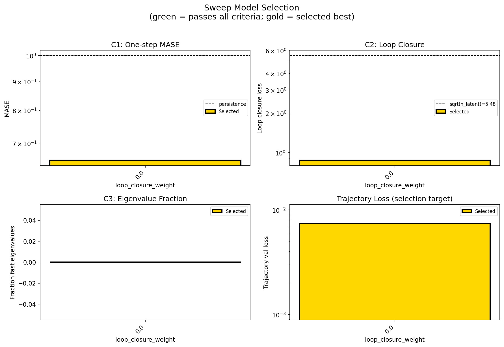
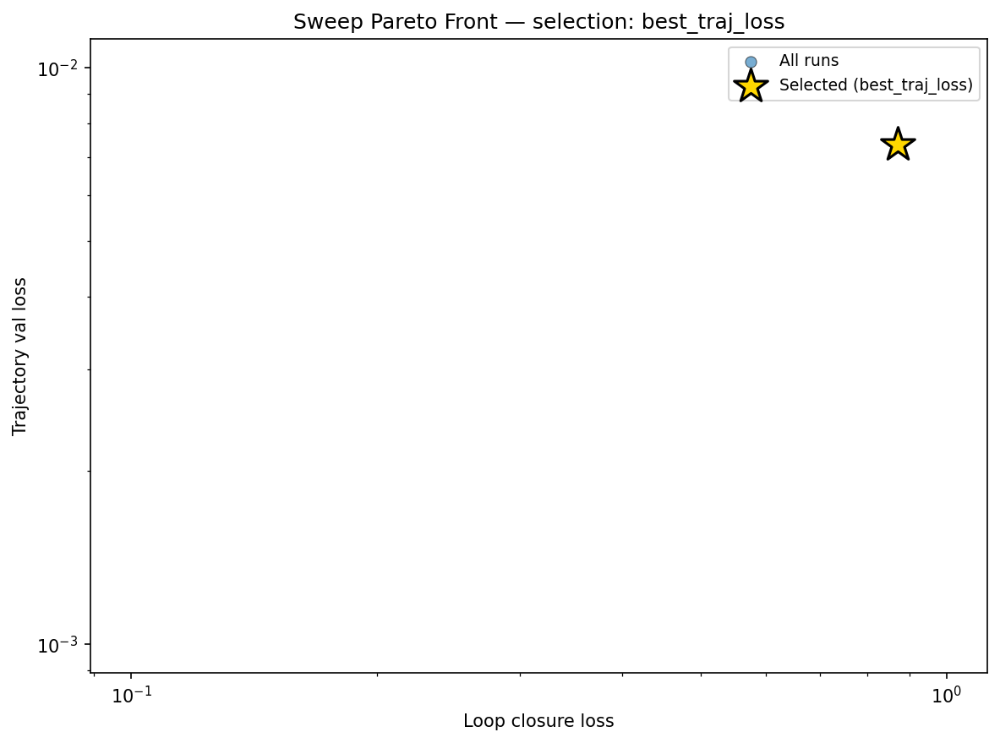
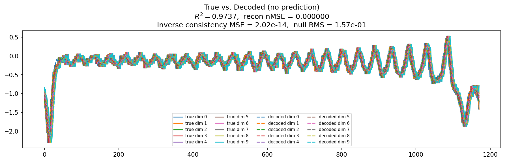
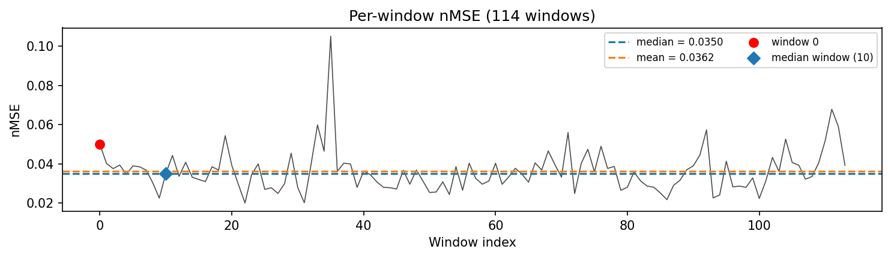
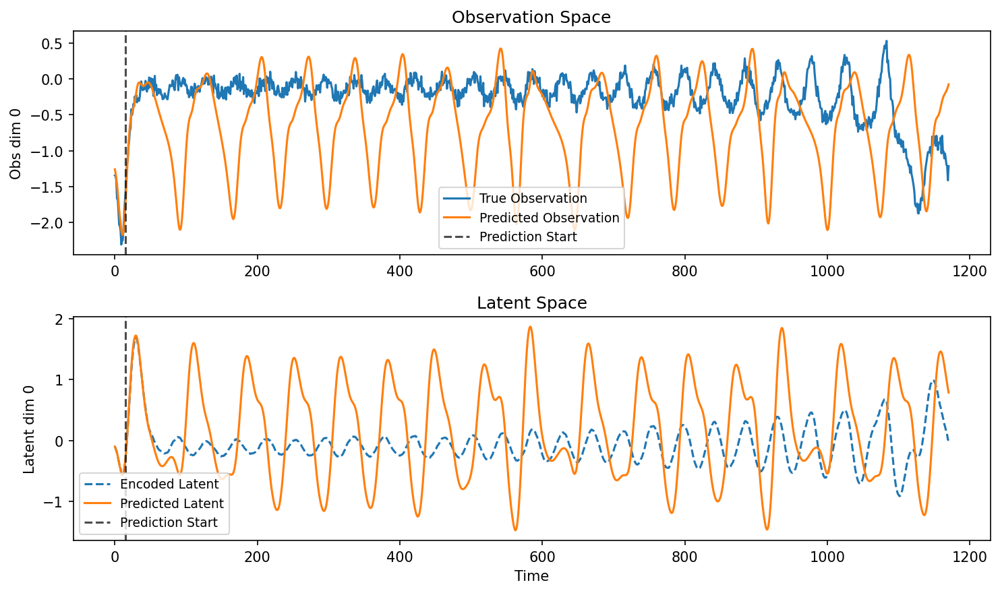
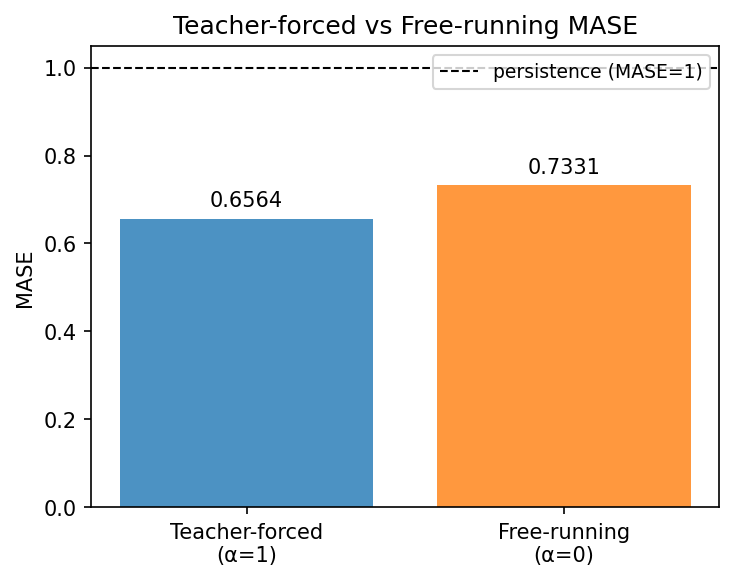
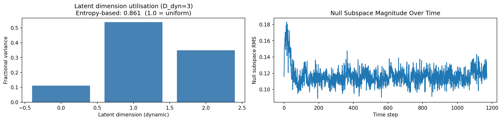
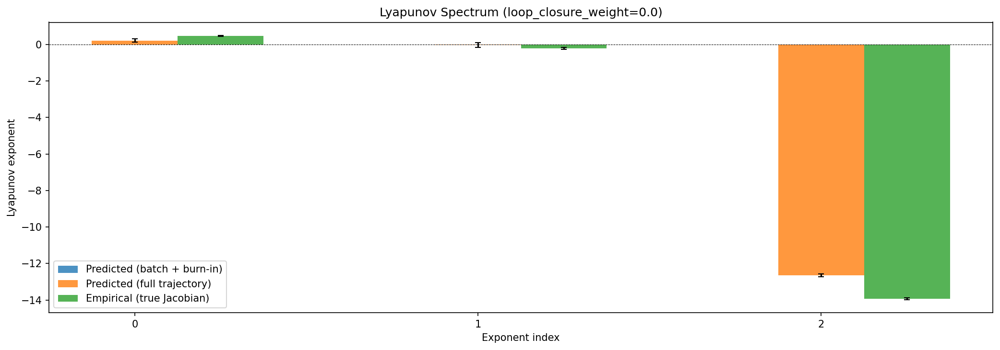
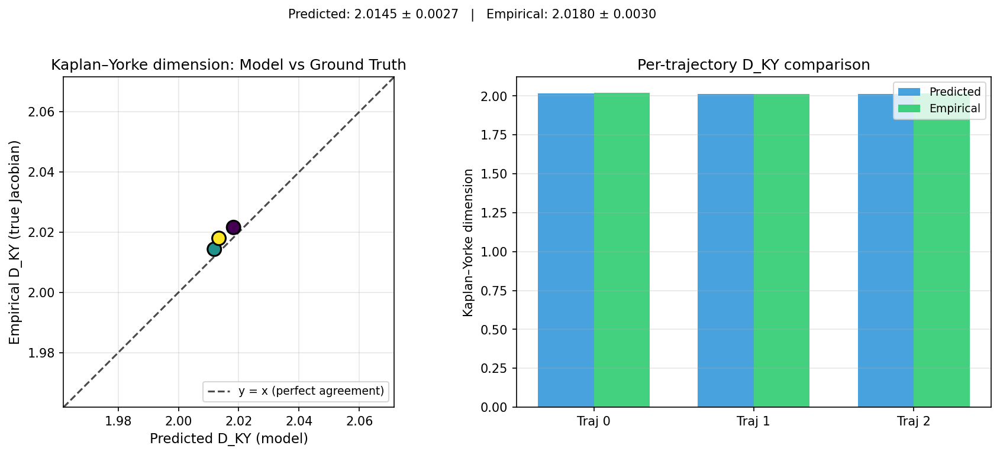
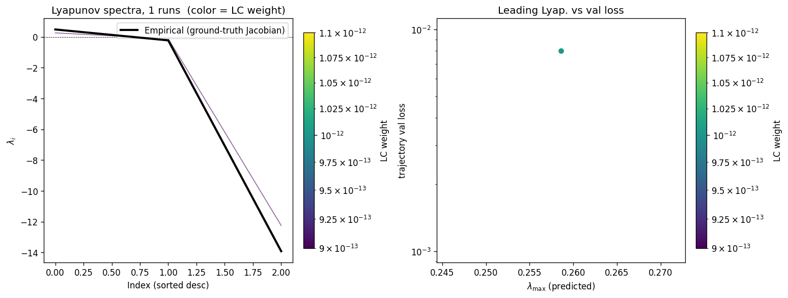
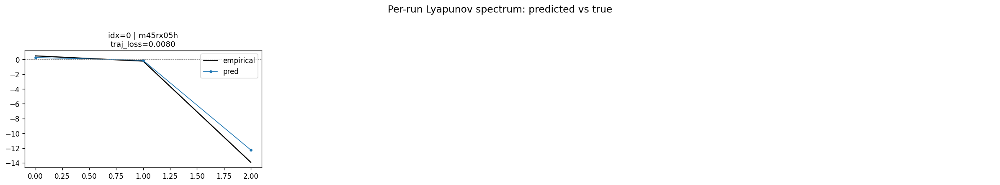
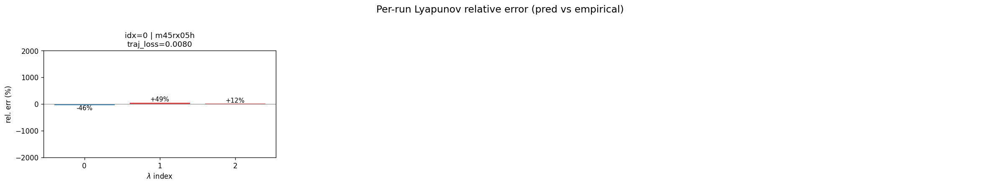
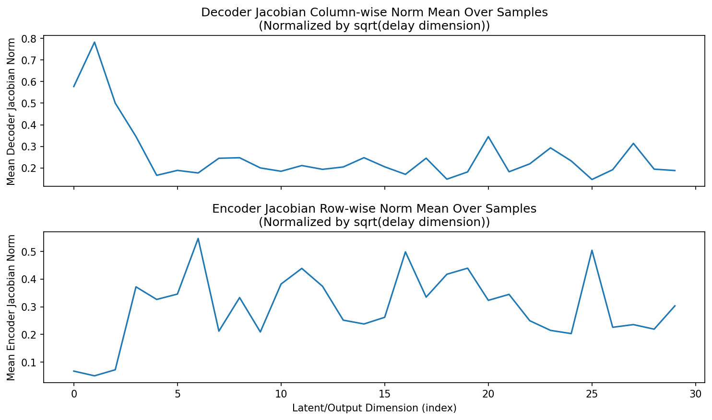
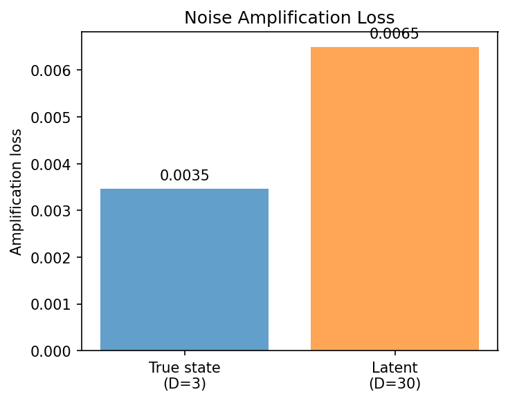
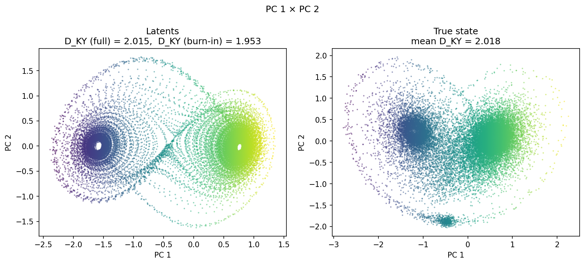
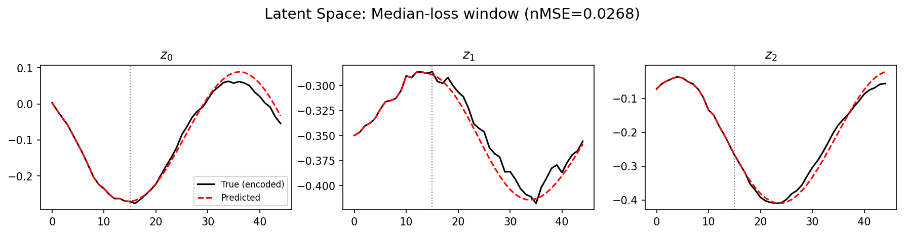
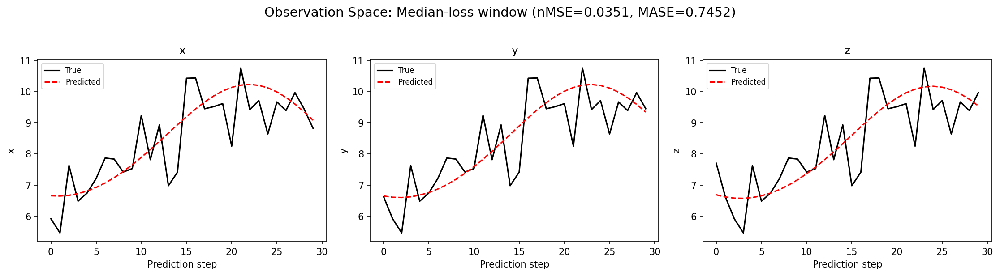
(to be written)
run_analytics stdoutrun_analyticsNo run_id provided — selecting best run from group 'lorenz_partial_25d_additive_mse_uniform_p30_obsnoise005_nd30_seed5' ...
Found 1 total runs in JacobianODE/Lorenz_INDpartial_NDsweep_D1_NormTrue__JacobianODE (group=lorenz_partial_25d_additive_mse_uniform_p30_obsnoise005_nd30_seed5)
All runs (state, loop_closure_weight, tangent_entropy_weight, kl_dyn_weight):
m45rx05h: state=finished, lc=0.0, te=0.0, kl_dyn=0.0
slurm_timeout_min not found in any run config — falling back to 180 min
Including m45rx05h (lc=0.0): use_all_runs=True (state=finished)
Found 1 effectively-done sweep runs:
loop_closure_weight=0.0, tangent_entropy_weight=0.0, kl_dyn_weight=0.0 -> run_id=m45rx05h
n_dims=30, n_latent=30, n_dyn=3, dt=0.0150
run=m45rx05h: DiagnosticMetrics(one_step_mase=0.6527441143989563, loop_closure_loss=0.8714377880096436, fast_eigenvalue_fraction=0.0, trajectory_val_loss=0.007361209020018578) (from W&B history)
Ranking method: best_traj_loss
Best run ID: m45rx05h
Best loop_closure_weight: 0.0
Best tangent_entropy_weight: 0.0
Best kl_dyn_weight: 0.0
Best traj loss: 0.007361
Criteria applied: ['C1', 'C2', 'C3']
Surviving: 1 / 1
Auto-selected run_id: m45rx05h
======================================================================
PARETO FRONTIER RUNS (1 runs)
======================================================================
Run ID LC Loss Traj Val Loss
------------ -------------- --------------
m45rx05h 0.871438 0.007361 <-- selected
======================================================================
RANKING METHOD COMPARISON (over 1 survivors)
======================================================================
Method Run ID LC Loss Traj Val Loss
---------------------- ------------ -------------- --------------
best_traj_loss m45rx05h 0.871438 0.007361 <-- active
pareto_knee m45rx05h 0.871438 0.007361
geo_rank m45rx05h 0.871438 0.007361
minimax_rank m45rx05h 0.871438 0.007361
geo_log_score m45rx05h 0.871438 0.007361
minimax_log_score m45rx05h 0.871438 0.007361
======================================================================
Loading run m45rx05h from JacobianODE/Lorenz_INDpartial_NDsweep_D1_NormTrue__JacobianODE ...
Train dataset shape: torch.Size([24772, 45, 30])
Validation dataset shape: torch.Size([7882, 45, 30])
Test dataset shape: torch.Size([3378, 45, 30])
Train trajectories dataset shape: torch.Size([22, 1171, 30])
Validation trajectories dataset shape: torch.Size([7, 1171, 30])
Test trajectories dataset shape: torch.Size([3, 1171, 30])
Loading checkpoint epoch=100-step=20200.ckpt...
Computing reconstruction ...
Computing MASE ...
Teacher-forced MASE: 0.6564
Free-running MASE: 0.7331
Computing latent utilization ...
Entropy-based utilization: 0.861
Null subspace mean RMS: 1.171922e-01
Computing Lyapunov exponents ...
Computing full-trajectory Lyapunov (3 test trajs, T=1171) ...
Predicted Lyapunov exponents (batch+burn-in, 128 windowed trajs):
λ_1 = +nan ± nan
λ_2 = +nan ± nan
λ_3 = +nan ± nan
Predicted Lyapunov exponents (full-length, 3 test trajs):
λ_1 = +0.2162 ± 0.0930
λ_2 = -0.0322 ± 0.1325
λ_3 = -12.6464 ± 0.0693
Empirical Lyapunov exponents (mean ± std):
λ_1 = +0.4677 ± 0.0259
λ_2 = -0.2173 ± 0.0549
λ_3 = -13.9174 ± 0.0513
Mean KY dim (predicted): 2.015 ± 0.003
Mean KY dim (empirical): 2.018 ± 0.003
Mean KY dim (burn-in): 1.953 ± 0.234
Computing prediction windows ...
Windows: 114 — nMSE min=0.0200, median=0.0350, mean=0.0362, max=0.1051
Computing long trajectory prediction ...
Computing encoder/decoder Jacobians ...
encoder_jacobian: (128, 30, 30)
decoder_jacobian: (128, 30, 30)
Computing amplification loss ...
Amplification loss — True state: 0.003467
Amplification loss — Latent: 0.006501